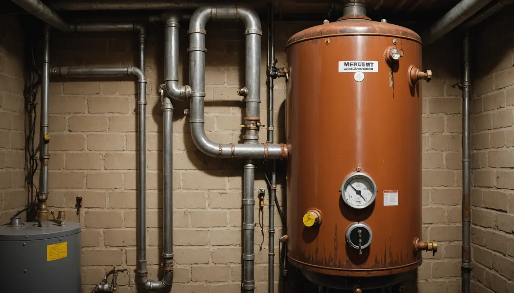
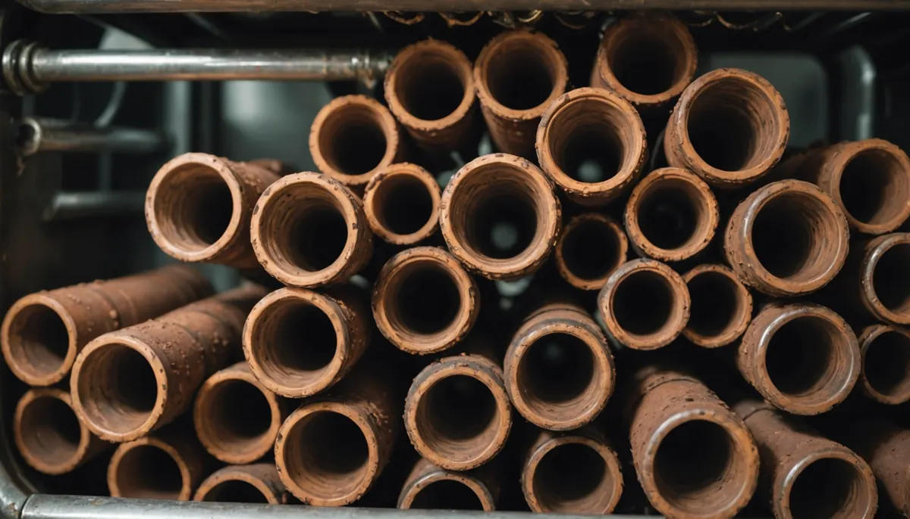
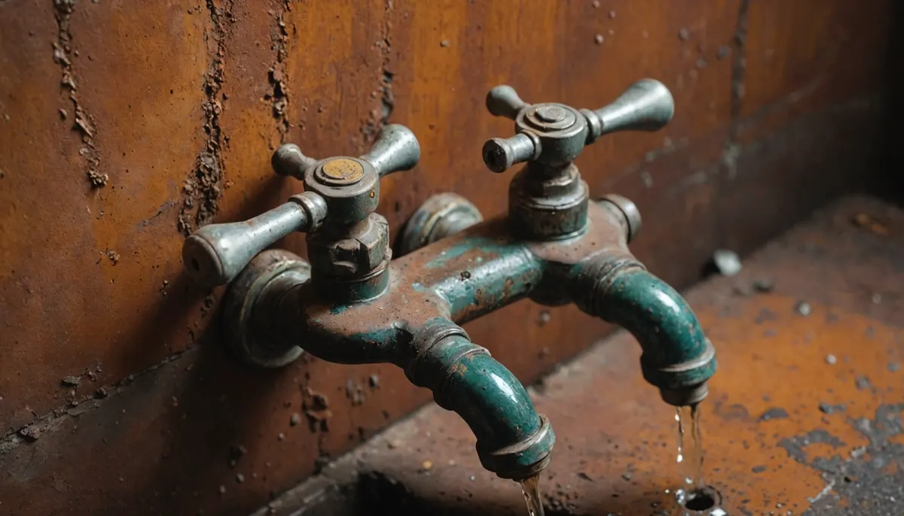

Corrosion is a hidden threat that can quietly destroy your home’s plumbing and appliances. Many homeowners underestimate the serious damage that corrosion can cause, leading to expensive repairs and replacements. In this post, we will explore surprising ways corrosion can compromise your water heater, appliances, and plumbing fixtures. By recognizing the risks of rust and leaks, you can take the necessary steps to protect your home and wallet.
1. Rusty Water Heaters
Corrosion is a primary culprit affecting water heaters, where rust can build up over time and contaminate your water supply. A survey by the American Water Works Association found that nearly 45% of homes experience rust issues in their water heaters. Rust diminishes both efficiency and heating capabilities, impacting your ability to enjoy hot showers or clean dishes.

Beyond efficiency, corroded water heaters can lead to potential health risks. Rusty water may appear brown and taste metallic, which can make it unpalatable for drinking and cooking. Regular inspections by the professionals at Angle Stop Plumbing can help you monitor your water heater’s health and ensure safe water supply for your family.
2. Decreased Efficiency
When corrosion weakens a water heater, it has to use more energy to heat the same amount of water, leading to higher utility bills. Studies show that corrosion-related inefficiencies can raise energy consumption by as much as 20%.
The cost of running an inefficient appliance can add up quickly, with average utility bills rising by $150 annually. Homeowners can avoid these costs by being proactive and addressing corrosion issues before they escalate with a few simple steps, first water heaters should be installed using non-metallic fittings. Second, during routine inspections be sure your plumbing service provider inspects the inside of tank using a camera to determine corrosion levels. Cameras are a must with any sound plumbing company, Angle Stop Plumbing utilizes cameras in multiple applications such as water heater inspection to bring peace of mind to their customers. Finally, a whole house water filtration device to remove many contaminants that initiate corrosion.
3. Premature Appliance Failure
Corroded connections in common household appliances, such as dishwashers and washing machines, can lead to early failures. For instance, a dishwasher’s corroded fittings could cause leaks that compromise the entire appliance, potentially resulting in repair costs upwards of $500.

When appliances break down, it creates stress and unexpected expenses. To prolong the lifespan of your appliances, schedule regular maintenance checks with Angle Stop Plumbing's Experts and replace corroded parts promptly.
4. Pipe Leaks
Corrosion can lead to serious issues like leaks in your plumbing fixtures. Studies show that 1 in 10 households experiences significant leak problems due to corroded pipes.
Even a small leak can cause major water damage and promote mold growth, which can be costly to address. For example, many homes throughout Middle Tennessee are built on crawlspaces, if a hot water line has a small pinhole leak, the steam released into a crawlspace can elevate moisture to severe levels to would damage floor-joist, subfloor and much more before its visible to the homeowner. Homeowners are encouraged to conduct regular plumbing inspections and replace corroded pipes to maintain their home's integrity. Ask your Middle Tennessee plumbing experts at Angle Stop Plumbing about the multiple membership levels available to you to maintain your plumbing system.
5. Damage to Fixtures
Corrosion affects not just appliances, but also vital fixtures like faucets and showerheads. Over time, corrosion and mineral buildup can severely restrict water flow, causing frustration.

If not addressed, clogged fixtures can result in costly replacements ranging from $100 to $300. Performing regular maintenance can help keep these fixtures in excellent working order.
6. Diminished Property Value
For homeowners looking to sell, signs of corrosion can deter buyers and significantly reduce property value. According to a National Association of Realtors report, issues like corroded plumbing can lead to an average property value decrease of 10% to 15% because the majority of buyers are looking to move in and enjoy their new home, not take on repairs.
Addressing corrosion early can help preserve your home’s market appeal, making it more attractive to potential buyers. Keeping up with maintenance not only enhances your living environment but can increase resale value in the future.
7. Mold Growth
Moisture from corroded pipes often leads to mold growth, posing serious health risks. The CDC identifies that mold exposure can cause respiratory problems and allergic reactions, affecting household health.
Moreover, mold remediation can cost between $500 and $6,000, depending on the extent of the growth. Keeping moisture levels in check and inspecting for corrosion can help you avoid these health hazards and financial strains.
8. Environmental Hazards
Corrosion can have repercussions beyond your home, contributing to environmental contamination. Damaged pipes can leak harmful substances into the ground or local water systems, affecting ecosystems and public health.
Homeowners should consider the broader impact of their plumbing systems. By maintaining and replacing corroded components, you can help protect not just your property but also the environment.
9. Increased Maintenance Costs
Ignoring corrosion issues often leads to rising maintenance costs. Homeowners may find themselves spending double or even triple on repairs over a few years compared to those who regularly address corrosion issues.
Investing in preventative maintenance can catch early signs of corrosion. The cost savings in repairs alone can justify the expense of regular inspections, promoting the long-term stability of your home.
10. Stressful Situations
When appliances fail and pipes leak, the stress can be overwhelming. Homeowners face not just the frustration of repairs but also the chaos that unexpected plumbing issues can create in their daily lives.
Proactively managing corrosion can alleviate this stress. A little vigilance goes a long way in preserving a peaceful home environment and avoiding a cascade of problems.
Safeguarding Your Home Investment
Corrosion is often underestimated, but its impact on your water heater, appliances, and plumbing fixtures is substantial. It affects not just efficiency and safety, but also your overall well-being and property value.
By staying informed and taking proactive measures, homeowners can mitigate the damage caused by corrosion utilizing Angle Stop Plumbing's routine maintenance plan through our membership program. Regular maintenance checks, quick repairs, and early interventions can save you from substantial costs down the line.
Your home is your sanctuary, and protecting it from corrosion will ensure it remains a safe and comfortable space for you and your loved ones.